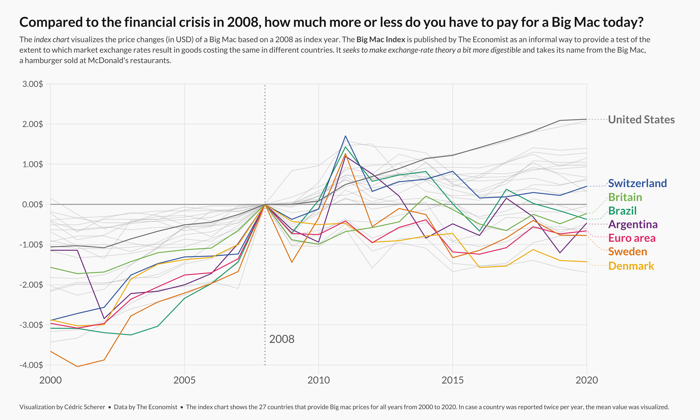
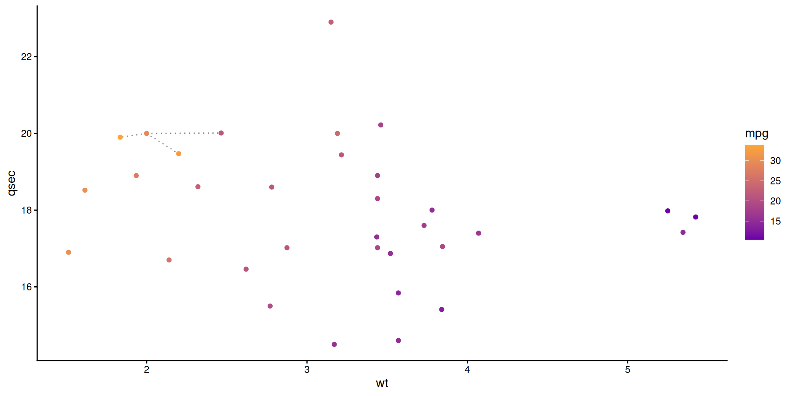
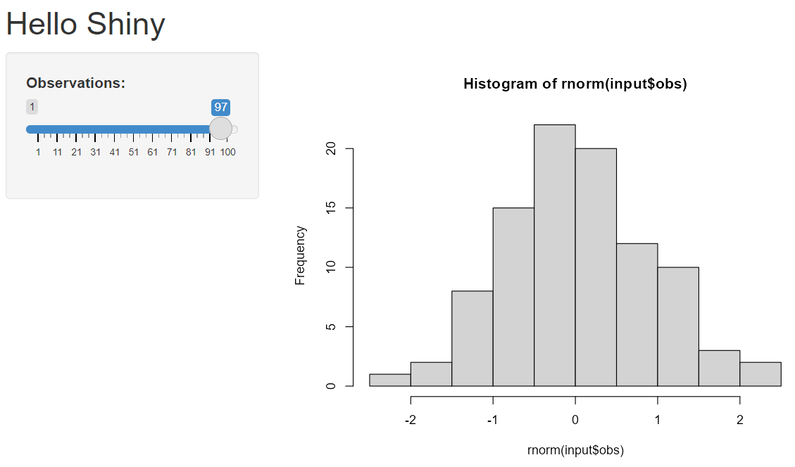
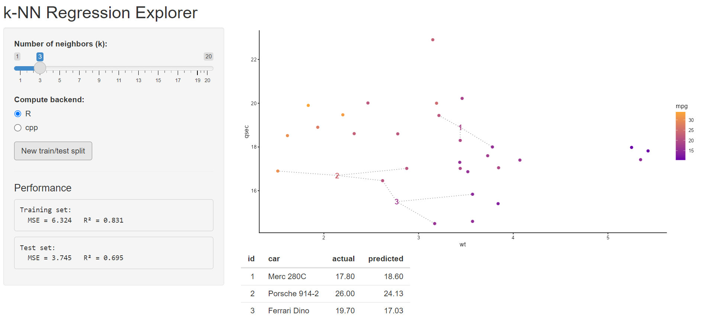

Statisticians Advancing in R for Data Science
Data Visualization and Shiny
Marquette University
STAR-DS - SDSS 2026
Data visualization in ggplot2
The ggplot2 package, a part of the tidyverse, is the go-to software for data visualization in R.
- Since its release in June of 2007, it has received over 18 million downloads on CRAN.
- It is based on the grammar of graphics, a scheme for data visualization that deconstructs graphs into components such as layers.
An example

Source: Cedric Scherer
Dataset
We will be working with mtcars, a dataset that comes preinstalled with R.
- In particular, we are interested in how
wtandqsecare related tompg.
mpg cyl disp hp drat wt qsec vs am gear carb
Mazda RX4 21.0 6 160 110 3.90 2.620 16.46 0 1 4 4
Mazda RX4 Wag 21.0 6 160 110 3.90 2.875 17.02 0 1 4 4
Datsun 710 22.8 4 108 93 3.85 2.320 18.61 1 1 4 1
Hornet 4 Drive 21.4 6 258 110 3.08 3.215 19.44 1 0 3 1
Hornet Sportabout 18.7 8 360 175 3.15 3.440 17.02 0 0 3 2
Valiant 18.1 6 225 105 2.76 3.460 20.22 1 0 3 1ggplot basics
Every ggplot starts with a ggplot() statement.
- This just generates a blank canvas for you to work on.
Layering in ggplot2
You may add layers to your plot using the + symbol.
- For a scatter plot, we use the
geom_point()layer.
Every geom requires two arguments:
mapping- a set of aesthetic mappings created byaes()- The
aes()function describes how each variable in the data maps to visual elements of the plot. - For
geom_point(), set the argumentsxandyinaes()to column names in your dataset.
- The
data- the data to be displayed in this layer.
Adding geom_point()
Customizing geoms
Adding aesthetics
We now represent the third variable, mpg, through the color option.
Additional customization
Adding geoms
We now observe a car with wt = 2, qsec = 20 and mpg = ?.
Prediction
We predict mpg using \(k\) nearest neighbors regression (knn).

knn helper function
knn_pred <- function(train_x, train_y, test_x, k) {
# Coerce types
train_x <- as.matrix(train_x)
test_x <- as.matrix(test_x)
train_y <- as.numeric(train_y)
# Scale train and test appropriately
train_x <- scale(train_x)
# Extract the mean and sd used
train_mean <- attr(train_x, "scaled:center")
train_sd <- attr(train_x, "scaled:scale")
# Apply the same transformation to test data
test_x <- scale(test_x, center = train_mean, scale = train_sd)
n <- nrow(train_x)
p <- ncol(train_x)
m <- nrow(test_x)
# Store predictions
preds <- numeric(m)
# Store ids of k nearest neighbors
ids <- numeric(m * k)
for (j in seq_len(m)) {
# Squared Euclidean distances using matrix ops (fast):
# t(train_x) is p x n; subtract p-vector test_x[j,]; colSums -> length n
dists <- colSums((t(train_x) - test_x[j, ])^2)
# Indices of k smallest distances (full sort, simple & reliable)
idx_k <- order(dists)[seq_len(k)]
# Mean of neighbor labels
preds[j] <- mean(train_y[idx_k])
# Store ids of nearest neighbors
# ids of vars
ids[((j-1) * k + 1):(j * k)] <- idx_k
}
out = list("preds" = preds, "ids" = ids)
out
}geom_segment() helper function
segment_df <- function(train_x, test_x, ids, k){
train_x <- as.matrix(train_x)
test_x <- as.matrix(test_x)
n <- nrow(train_x); p <- ncol(train_x); m <- nrow(test_x)
# Create df with each test point alongside k nearest neighbors
test_x_out = test_x[rep(1:m, each = k), ]
train_x_out = train_x[ids, ]
out = as.data.frame(cbind(test_x_out, train_x_out))
colnames(out) <- c(paste0("test_", colnames(train_x)),
paste0("train_", colnames(train_x)))
out
}Applying helper functions
Adding geom_segment()
ggplot() +
geom_segment(aes(x = test_wt, xend = train_wt,
y = test_qsec, yend = train_qsec),
color = "grey50", linetype = "dotted",
data = nn) +
geom_point(aes(x = wt, y = qsec, color = mpg),
data = mtcars) +
geom_point(aes(x = wt, y = qsec, color = pred),
data = new_car) +
scale_color_gradient(low = "#6A00A8FF", high = "#FCA636FF") +
theme_classic() +
labs(x = 'wt', y = 'qsec')
Structure of a Shiny App
uidefines layout and inputs/outputsservercontains R code & reactivity
Hello Shiny App

Structure of a Shiny App
# app.R single-file app
library(shiny)
ui <- fluidPage(
titlePanel("Hello Shiny"),
sidebarLayout(
sidebarPanel(sliderInput("obs", "Observations:", 1, 100, 50)),
mainPanel(plotOutput("distPlot"))
)
)
server <- function(input, output) {
output$distPlot <- renderPlot({
hist(rnorm(input$obs))
})
}
shinyApp(ui, server)uidefines layout and inputs/outputsservercontains R code & reactivity
Structure of a Shiny App
Shiny apps come in two parts:
UI
Defines the layout and appearance.
Contains elements such as:
- layout structures (sidebars)
- inputs (text boxes, sliders, buttons)
- outputs (plots, tables)
Server
Performs calculations.
Contains the logic to respond to user inputs, and update outputs.
Communicates with the UI to dynamically render outputs.
k-NN Regression Explorer

Train/test helper
make_split <- function(data, prop = 0.7) {
n <- nrow(data)
train_idx <- sample(n, size = floor(prop * n))
list(train = data[train_idx, ], test = data[-train_idx, ])
}- We use this function to split the
mtcarsdata into a train and test set.
UI
ui <- fluidPage(
titlePanel("k-NN Regression Explorer"),
sidebarLayout(
sidebarPanel(
sliderInput("k", "Number of neighbors (k):",
min = 1, max = 20, value = 5, step = 1),
radioButtons("backend", "Compute backend:",
choices = c("R","cpp"), selected = "cpp"),
actionButton("resample", "New train/test split"),
hr(),
h4("Performance"),
verbatimTextOutput("trainPerf"),
verbatimTextOutput("testPerf")
),
mainPanel(
plotOutput("predPlot", height = "400px"),
tableOutput("predTable")
)
)
)Server (part one)
server <- function(input, output, session) {
# reactive train/test split, re-draw when resample pressed
split <- eventReactive(input$resample, {
make_split(mtcars, prop = 0.92)
}, ignoreNULL = FALSE)
# compute fitted (train) and predicted (test)
fitted_vals <- reactive({
d_train <- split()$train
knn_pred(d_train[, c("wt", "qsec")], d_train[, c("mpg")],
d_train[, c("wt", "qsec")], input$k, input$backend)
})
predicted <- reactive({
d_train <- split()$train
d_test <- split()$test
knn_pred(d_train[, c("wt", "qsec")], d_train[, c("mpg")],
d_test[, c("wt", "qsec")], input$k, input$backend)
})
# compute metrics
mse <- function(obs, pred) mean((obs - pred)^2)
r2 <- function(obs, pred) 1 - (sum((obs - pred)^2) / sum((obs - mean(obs))^2))
output$trainPerf <- renderPrint({
obs <- split()$train$mpg
cat("Training set:\n")
cat(" MSE =", round(mse(obs, fitted_vals()$preds), 3),
" R² =", round(r2(obs, fitted_vals()$preds), 3), "\n")
})
output$testPerf <- renderPrint({
obs <- split()$test$mpg
cat("Test set:\n")
cat(" MSE =", round(mse(obs, predicted()$preds), 3),
" R² =", round(r2(obs, predicted()$preds), 3), "\n")
})
# Plot showing the k nearest neighbors for each test point
output$predPlot <- renderPlot({
# Store train/test
d_train <- split()$train
d_test <- split()$test
d_test$id = 1:nrow(d_test)
# Create df for geom_segment
nn <- segment_df(d_train[, c("wt", "qsec")],
d_test[, c("wt", "qsec")],
predicted()$ids, input$k)
# Add predictions for test set
d_test$pred <- predicted()$preds
# Create the plot
ggplot() +
geom_segment(aes(x = test_wt, xend = train_wt,
y = test_qsec, yend = train_qsec),
color = "grey50", linetype = "dotted",
data = nn) +
geom_point(aes(x = wt, y = qsec, color = mpg),
size = 2, data = d_train) +
geom_text(aes(x = wt, y = qsec, color = pred, label = id),
size = 5, fontface = "bold", data = d_test) +
scale_color_gradient(low = "#6A00A8FF", high = "#FCA636FF") +
theme_classic() +
labs(x = "wt", y = "qsec")
})
# show first few test observations
output$predTable <- renderTable({
d_test <- split()$test
data.frame(
id = 1:nrow(d_test),
car = rownames(d_test),
actual = round(d_test$mpg,2),
predicted = round(predicted()$preds,2)
)
}, rownames = FALSE)
}eventReactive()updates in response to a specific event (i.e. button push).
Server (part two)
server <- function(input, output, session) {
# reactive train/test split, re-draw when resample pressed
split <- eventReactive(input$resample, {
make_split(mtcars, prop = 0.92)
}, ignoreNULL = FALSE)
# compute fitted (train) and predicted (test)
fitted_vals <- reactive({
d_train <- split()$train
knn_pred(d_train[, c("wt", "qsec")], d_train[, c("mpg")],
d_train[, c("wt", "qsec")], input$k, input$backend)
})
predicted <- reactive({
d_train <- split()$train
d_test <- split()$test
knn_pred(d_train[, c("wt", "qsec")], d_train[, c("mpg")],
d_test[, c("wt", "qsec")], input$k, input$backend)
})
# compute metrics
mse <- function(obs, pred) mean((obs - pred)^2)
r2 <- function(obs, pred) 1 - (sum((obs - pred)^2) / sum((obs - mean(obs))^2))
output$trainPerf <- renderPrint({
obs <- split()$train$mpg
cat("Training set:\n")
cat(" MSE =", round(mse(obs, fitted_vals()$preds), 3),
" R² =", round(r2(obs, fitted_vals()$preds), 3), "\n")
})
output$testPerf <- renderPrint({
obs <- split()$test$mpg
cat("Test set:\n")
cat(" MSE =", round(mse(obs, predicted()$preds), 3),
" R² =", round(r2(obs, predicted()$preds), 3), "\n")
})
# Plot showing the k nearest neighbors for each test point
output$predPlot <- renderPlot({
# Store train/test
d_train <- split()$train
d_test <- split()$test
d_test$id = 1:nrow(d_test)
# Create df for geom_segment
nn <- segment_df(d_train[, c("wt", "qsec")],
d_test[, c("wt", "qsec")],
predicted()$ids, input$k)
# Add predictions for test set
d_test$pred <- predicted()$preds
# Create the plot
ggplot() +
geom_segment(aes(x = test_wt, xend = train_wt,
y = test_qsec, yend = train_qsec),
color = "grey50", linetype = "dotted",
data = nn) +
geom_point(aes(x = wt, y = qsec, color = mpg),
size = 2, data = d_train) +
geom_text(aes(x = wt, y = qsec, color = pred, label = id),
size = 5, fontface = "bold", data = d_test) +
scale_color_gradient(low = "#6A00A8FF", high = "#FCA636FF") +
theme_classic() +
labs(x = "wt", y = "qsec")
})
# show first few test observations
output$predTable <- renderTable({
d_test <- split()$test
data.frame(
id = 1:nrow(d_test),
car = rownames(d_test),
actual = round(d_test$mpg,2),
predicted = round(predicted()$preds,2)
)
}, rownames = FALSE)
}reactive()updates in response to any input change.
Server (part three)
server <- function(input, output, session) {
# reactive train/test split, re-draw when resample pressed
split <- eventReactive(input$resample, {
make_split(mtcars, prop = 0.92)
}, ignoreNULL = FALSE)
# compute fitted (train) and predicted (test)
fitted_vals <- reactive({
d_train <- split()$train
knn_pred(d_train[, c("wt", "qsec")], d_train[, c("mpg")],
d_train[, c("wt", "qsec")], input$k, input$backend)
})
predicted <- reactive({
d_train <- split()$train
d_test <- split()$test
knn_pred(d_train[, c("wt", "qsec")], d_train[, c("mpg")],
d_test[, c("wt", "qsec")], input$k, input$backend)
})
# compute metrics
mse <- function(obs, pred) mean((obs - pred)^2)
r2 <- function(obs, pred) 1 - (sum((obs - pred)^2) / sum((obs - mean(obs))^2))
output$trainPerf <- renderPrint({
obs <- split()$train$mpg
cat("Training set:\n")
cat(" MSE =", round(mse(obs, fitted_vals()$preds), 3),
" R² =", round(r2(obs, fitted_vals()$preds), 3), "\n")
})
output$testPerf <- renderPrint({
obs <- split()$test$mpg
cat("Test set:\n")
cat(" MSE =", round(mse(obs, predicted()$preds), 3),
" R² =", round(r2(obs, predicted()$preds), 3), "\n")
})
# Plot showing the k nearest neighbors for each test point
output$predPlot <- renderPlot({
# Store train/test
d_train <- split()$train
d_test <- split()$test
d_test$id = 1:nrow(d_test)
# Create df for geom_segment
nn <- segment_df(d_train[, c("wt", "qsec")],
d_test[, c("wt", "qsec")],
predicted()$ids, input$k)
# Add predictions for test set
d_test$pred <- predicted()$preds
# Create the plot
ggplot() +
geom_segment(aes(x = test_wt, xend = train_wt,
y = test_qsec, yend = train_qsec),
color = "grey50", linetype = "dotted",
data = nn) +
geom_point(aes(x = wt, y = qsec, color = mpg),
size = 2, data = d_train) +
geom_text(aes(x = wt, y = qsec, color = pred, label = id),
size = 5, fontface = "bold", data = d_test) +
scale_color_gradient(low = "#6A00A8FF", high = "#FCA636FF") +
theme_classic() +
labs(x = "wt", y = "qsec")
})
# show first few test observations
output$predTable <- renderTable({
d_test <- split()$test
data.frame(
id = 1:nrow(d_test),
car = rownames(d_test),
actual = round(d_test$mpg,2),
predicted = round(predicted()$preds,2)
)
}, rownames = FALSE)
}renderPlot()must be paired withplotOutput()in UI.
Q&A
Thank You